根据 W3C HTML4.01 规范中的描述，type 属性为 "file" 的 INPUT 元素在浏览器中将被渲染为一个文件选择控件（file select），这种控件允许用户在其本地选择文件，通常由一个用于显示文件名的只读文本框及一个用于触发选择文件对话框的按钮组成。而规范中对文件选择控件只描述了其应具有功能，并没有限制其呈现方式。所以各浏览器按照自己的方式渲染该控件。
关于文本选择控件 "INPUT[type=file]" 的详细信息，请参考 HTML 4.01 规范 17.2.1 中的内容。
另请参考 WiKiPEDiA：http://en.wikipedia.org/wiki/File_select
对于文本选择控件 "INPUT[type=file]" ，各浏览器对其有不同形式的渲染，并且某些 CSS 特性也有着不同的表现。其中 Chrome Safari中对文件选择控件的渲染样式与其他浏览器有较大区别，这是由于浏览器所用的 WebKit 内核设计所致。
浏览器之间不同的渲染方式将造成某些视觉上的差异，但并不影响功能的使用。
| 所有浏览器 |
|---|
<input type="file" />
上面代码在浏览器中将被渲染为一个文件选择控件。这个控件在各浏览器的呈现方式如下：
| 未选择文件 | 已选择文件 | |
|---|---|---|
| IE | 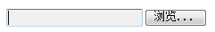 | 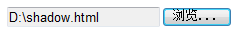 |
| Firefox | 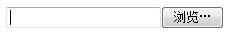 | 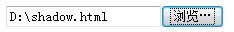 |
| Chrome | 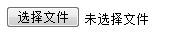 | 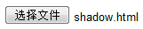 |
| Safari | 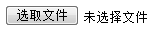 | 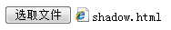 |
| Opera | 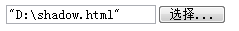 |
可以看到 IE Firefox Opera 会渲染一个文本框用于显示选择的全路径文件名，一个按钮用于触发文件选择对话框；Chrome Safari 则会渲染一个按钮用于触发文件选择对话框，其右侧直接显示文本，当未选择文件时为 "未选择文件" ，选择文件后为选择的文件名（不包含路径）。
下面为文件选择控件设置一些 CSS 特性，看看各浏览器的渲染差异：
<div style="float:left; background:#AAA; padding:5px; border:1px dashed black;">
<input type="file" style="width:200px; height:50px; background:#DDD; border:5px solid
black;" /> </div>
这段代码在不同的浏览器环境中的表现：
| IE | 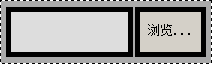 |
|---|---|
| Firefox | 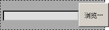 |
| Chrome, Safari | 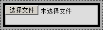 |
| Opera | 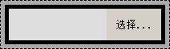 |
更多更详细的渲染差异请参考：http://www.456bereastreet.com/lab/form_controls/file/。
在 Chrome Safari 中对于文件选择控件的特殊呈现方式为 WebKit 内核特有，且其渲染方式也符合 W3C 对文件选择控件的规定。一般来说这种差异不会带来严重的兼容性问题。
若需要强制在所有浏览器中呈现一样的效果，即文本框+按钮方式，则需要一些处理，参见：http://www.quirksmode.org/dom/inputfile.html。
<html> <head> <style type="text/css"> form.example input { background:
url('input_boxes.gif') no-repeat 0 -58px; border: none; width: 241px; height: 20px; padding-left: 3px;
padding-top: 3px; } form.example input:focus { background-color: transparent; } form.example
div.fileinputs { position: relative; height: 30px; width: 300px; } form.example input.file { width:
300px; margin: 0; } form.example input.file.hidden { position: relative; text-align: right;
-moz-opacity:0 ; filter:alpha(opacity: 0); opacity: 0; z-index: 2; } form.example div.fakefile {
position: absolute; top: 0px; left: 0px; width: 350px; padding: 0; margin: 0; z-index: 1; line-height:
90%; } form.example div.fakefile input { margin-bottom: 5px; margin-left: 0; } </style>
</head> <body> <form action="#" class="example"> <div
class="fileinputs"> <input type="file" /> </div> </form>
<script> var W3CDOM = (document.createElement && document.getElementsByTagName); function
initFileUploads() { if (!W3CDOM) return; var fakeFileUpload = document.createElement('div');
fakeFileUpload.className = 'fakefile'; fakeFileUpload.appendChild(document.createElement('input')); var
image = document.createElement('img'); image.src='button_select.gif'; fakeFileUpload.appendChild(image);
var x = document.getElementsByTagName('input'); for (var i=0;i<x.length;i++) { if (x[i].type !=
'file') continue; if (x[i].parentNode.className != 'fileinputs') continue; x[i].className = 'file
hidden'; var clone = fakeFileUpload.cloneNode(true); x[i].parentNode.appendChild(clone);
x[i].relatedElement = clone.getElementsByTagName('input')[0]; x[i].onchange = x[i].onmouseout = function
() { this.relatedElement.value = this.value; } } } initFileUploads(); </script> </body>
</html>
| 操作系统版本: | Windows 7 Ultimate build 7600 |
|---|---|
| 浏览器版本: |
IE6
IE7 IE8 Firefox 3.6 Chrome 5.0.342.2 dev Safari 4.0.4 Opera 10.50 |
| 测试页面: | |
| 本文更新时间: | 2010-08-03 |
input file 文件 浏览 上传